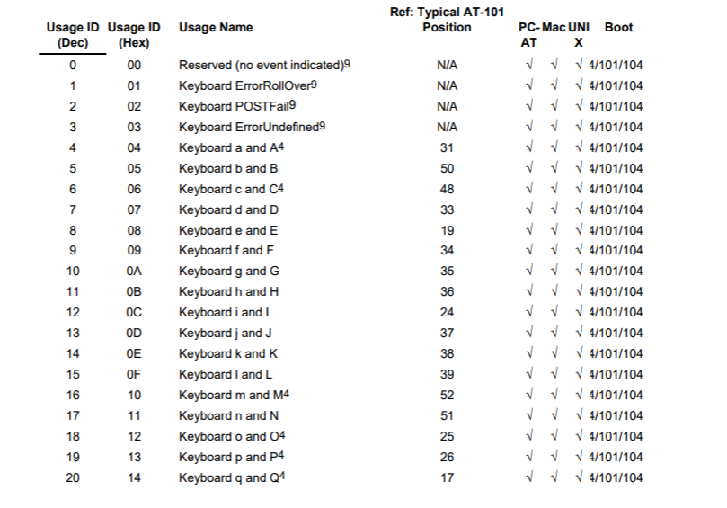
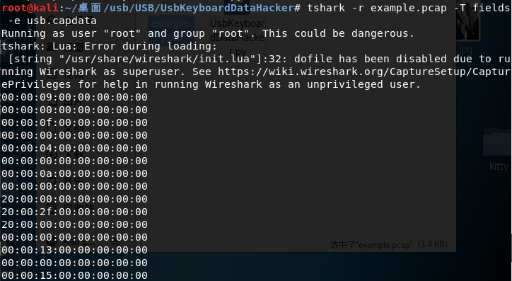

USB
USB¶
Mouse¶
The data length of a mouse packet is 4 bytes. The first byte represents buttons pressed. 0x00 is no buttons pressed, 0x01 indicates left button pressed, and 0x02 indicates right button pressed. The second byte is a signed byte, where the highest bit is the sign bit. When positive, it represents how many pixels the mouse has moved horizontally to the right. When negative, it shows how many pixels it has moved horizontally to the left. The third byte, like the second byte, represents an offset that moves vertically up and down.

By extracting those bytes in the USB mouse packets, you can recover the mouse movement.
Keyboard¶
The data length of a keyboard packet is 8 bytes.
The keystroke is at the 3rd byte.

Each value corresponds to different keys.

The full keyboard keymap can be found here on page 53 to 59.
By extracting 3rd bytes within the keyboard packets, you can recover all the keystrokes pressed.
USB Traffic Packet Capture¶
Before we get started, let's introduce some of the basics of USB.
USB has different specifications, the following are three different types of USB:
l USB UART
l USB HID
l USB Memory
UART or Universal Asynchronous Receiver/Transmitter is a simple device that uses USB to receive and transmit data.
HID stands for human interface. This type is suitable for interactive applications such as keyboards, mice, gamepads, and digital display devices.
The last is USB Memory, or data storage. External HDD, thumb drive/flash drive, etc. are all of this type.
The most widely used USB type is USB Memory.
Each USB device (especially HID or Memory) has a vendor ID (Vendor ID) and a product identifier (Product Id). Vendor ID is used to mark which manufacturer made this USB device. Product ID is used for different types of products.
An example:

The above picture is a list of USB devices connected to my computer in a virtual machine.
In this example, I have a wireless mouse under VMware, which is a HID device. This device is running normally. You can see all the USB devices connected with the lsusb command.
Now, you can find out which one is this mouse?
Correct! It is the fourth one:
Bus 002 Device 002: ID 0e0f:0003 VMware, Inc. Virtual Mouse
ID 0e0f:0003 is the Vendor-Product ID pair, where the value of Vendor ID is 0e0f and the value of Product ID is 0003.
Bus 002 Device 002 means the usb device is connected. This should be noted.
We ran Wireshark with root permission to capture the USB data stream. However, we don't recommend it.
We need to give the user enough permissions to get the usb data stream in Linux. We can use udev to achieve our goal. We need to create a user group usbmon and add our account to this group.
addgroup usbmon
gpasswd -a $USER usbmon
echo 'SUBSYSTEM=="usbmon", GROUP="usbmon", MODE="640"' > /etc/udev/rules.d/99-usbmon.rules
Next, we need the usbmon kernel module. If the module is not loaded, we can load the module with the following command:
modprobe usbmon
Open wireshark and you will see usbmonX where X represents the number.
It should look like this (note we are running it as root):

If the interface is active or there is data flow, wireshark will display it as a wave next to that interface.
So, which one should we choose?
Correct!, usbmon0. Open that and you can observe the usb packets.

Through capturing the usb packets, we can learn the communication and working principles used between the USB device and the host. Furthermore, we can analyze the usb packets.
CTF Examples¶
UsbKeyboardDataHacker¶
Based on the previous sections, we have a rough understanding of the USB traffic packet capture.
Let's talk about how to analyze a USB traffic packet capture.
For details on the USB protocol, see the Wireshark wiki
Download the PCAP file here.
Let's start with a simple example on GitHub:
We can know that the data part of the USB protocol is in the Leftover Capture Data field.
Mac and Linux
You can use the tshark command to extract the Leftover Capture Data field.
The command is as follows:
tshark -r example.pcap -T fields -e usb.capdata > usbdata.txt
Windows
There is a tshark.exe in the wireshark directory. For example, on my machine it's at D:\Program Files\Wireshark\tshark.exe.

Run cmd and navigate to the current directory.
The command is as follows:
tshark.exe -r example.pcap -T fields -e usb.capdata > usbdata.txt
For detailed usage of the tshark command, see the Wireshark official documentation
Run the command and open at usbdata.txt. You will see the size of the data is 8 bytes.

The data length of the keyboard packet is 8 bytes, the keystroke information is at the 3rd byte. Each time the key stroke will generate a keyboard event usb packet.
The data length of the mouse data packet is 4 bytes. The first byte represents the button. When the value is 0x00, it means there is no button. When it is 0x01, it means the left button. When it is 0x02, it means the right button. The second byte can be thought as a signed byte type, with the most significant bit as the sign bit. When this value is positive, it represents how many pixels the mouse is horizontally shifted to the right. When it is negative, it represents how many pixels are horizontally shifted to the left. The third byte is similar to the second byte and represents the offset of the vertical up and down movement.
We can find the meaning of each value here. With this information, we can make a key map.
Here is a table of keymap for keyboard strokes, which can be found from the link above.
We write the following script:
mappings = { 0x04:"A", 0x05:"B", 0x06:"C", 0x07:"D", 0x08:"E", 0x09:"F", 0x0A:"G", 0x0B:"H", 0x0C:"I", 0x0D:"J", 0x0E:"K", 0x0F:"L", 0x10:"M", 0x11:"N",0x12:"O", 0x13:"P", 0x14:"Q", 0x15:"R", 0x16:"S", 0x17:"T", 0x18:"U",0x19:"V", 0x1A:"W", 0x1B:"X", 0x1C:"Y", 0x1D:"Z", 0x1E:"1", 0x1F:"2", 0x20:"3", 0x21:"4", 0x22:"5", 0x23:"6", 0x24:"7", 0x25:"8", 0x26:"9", 0x27:"0", 0x28:"n", 0x2a:"[DEL]", 0X2B:" ", 0x2C:" ", 0x2D:"-", 0x2E:"=", 0x2F:"[", 0x30:"]", 0x31:"\\", 0x32:"~", 0x33:";", 0x34:"'", 0x36:",", 0x37:"." }
nums = []
keys = open('usbdata.txt')
# tshark -r example.pcap -T fields -e usb.capdata > usbdata.txt
for line in keys:
if line[:2] != '00' or line[4:6] != '00':
nums.append(int(line[4:6],16))
# 00:00:xx:....
keys.close()
output = ""
for n in nums:
if n == 0:
continue
if n in mappings:
output += mappings[n]
else:
output += '[unknown]'
print('output:' + output)
The results are as follows:

Here is the full solve script:
#!/usr/bin/env python
import sys
import os
DataFileName = "usb.dat"
presses = []
normalKeys = {"04":"a", "05":"b", "06":"c", "07":"d", "08":"e", "09":"f", "0a":"g", "0b":"h", "0c":"i", "0d":"j", "0e":"k", "0f":"l", "10":"m", "11":"n", "12":"o", "13":"p", "14":"q", "15":"r", "16":"s", "17":"t", "18":"u", "19":"v", "1a":"w", "1b":"x", "1c":"y", "1d":"z","1e":"1", "1f":"2", "20":"3", "21":"4", "22":"5", "23":"6","24":"7","25":"8","26":"9","27":"0","28":"<RET>","29":"<ESC>","2a":"<DEL>", "2b":"\t","2c":"<SPACE>","2d":"-","2e":"=","2f":"[","30":"]","31":"\\","32":"<NON>","33":";","34":"'","35":"<GA>","36":",","37":".","38":"/","39":"<CAP>","3a":"<F1>","3b":"<F2>", "3c":"<F3>","3d":"<F4>","3e":"<F5>","3f":"<F6>","40":"<F7>","41":"<F8>","42":"<F9>","43":"<F10>","44":"<F11>","45":"<F12>"}
shiftKeys = {"04":"A", "05":"B", "06":"C", "07":"D", "08":"E", "09":"F", "0a":"G", "0b":"H", "0c":"I", "0d":"J", "0e":"K", "0f":"L", "10":"M", "11":"N", "12":"O", "13":"P", "14":"Q", "15":"R", "16":"S", "17":"T", "18":"U", "19":"V", "1a":"W", "1b":"X", "1c":"Y", "1d":"Z","1e":"!", "1f":"@", "20":"#", "21":"$", "22":"%", "23":"^","24":"&","25":"*","26":"(","27":")","28":"<RET>","29":"<ESC>","2a":"<DEL>", "2b":"\t","2c":"<SPACE>","2d":"_","2e":"+","2f":"{","30":"}","31":"|","32":"<NON>","33":"\"","34":":","35":"<GA>","36":"<","37":">","38":"?","39":"<CAP>","3a":"<F1>","3b":"<F2>", "3c":"<F3>","3d":"<F4>","3e":"<F5>","3f":"<F6>","40":"<F7>","41":"<F8>","42":"<F9>","43":"<F10>","44":"<F11>","45":"<F12>"}
def main():
# check argv
if len(sys.argv) != 2:
print("Usage : ")
print(" python UsbKeyboardHacker.py data.pcap")
print("Tips : ")
print(" To use this python script , you must install the tshark first.")
print(" You can use `sudo apt-get install tshark` to install it")
print("Author : ")
print(" WangYihang <wangyihanger@gmail.com>")
print(" If you have any questions , please contact me by email.")
print(" Thank you for using.")
exit(1)
# get argv
pcapFilePath = sys.argv[1]
# get data of pcap
os.system("tshark -r %s -T fields -e usb.capdata 'usb.data_len == 8' > %s" % (pcapFilePath, DataFileName))
# read data
with open(DataFileName, "r") as f:
for line in f:
presses.append(line[0:-1])
# handle
result = ""
for press in presses:
if press == '':
continue
if ':' in press:
Bytes = press.split(":")
else:
Bytes = [press[i:i+2] for i in range(0, len(press), 2)]
if Bytes[0] == "00":
if Bytes[2] != "00" and normalKeys.get(Bytes[2]):
result += normalKeys[Bytes[2]]
elif int(Bytes[0],16) & 0b10 or int(Bytes[0],16) & 0b100000: # shift key is pressed.
if Bytes[2] != "00" and normalKeys.get(Bytes[2]):
result += shiftKeys[Bytes[2]]
else:
print("[-] Unknow Key : %s" % (Bytes[0]))
print("[+] Found : %s" % (result))
# clean the temp data
os.system("rm ./%s" % (DataFileName))
if __name__ == "__main__":
main()
We write the following script:
XMan - AutoKey¶
Download the PCAP file here

Run the script from earlier: python UsbKeyboardDataHacker.py task_AutoKey.pcapng
Then we got this output:
[+] Found : <CAP>a<CAP>utokey('****').decipheer('<CAP>mplrvffczeyoujfjkybxgzvdgqaurkxzolkolvtufblrnjesqitwahxnsijxpnmplshcjbtyhzealogviaaissplfhlfswfehjncrwhtinsmambvexo<DEL>pze<DEL>iz')
We can see that this is a autokey cipher, but how do we decode it without the key?
I found this script, which brute force the key.
The brute force script:
Note
Run this script in Python2
from ngram_score import ngram_score
from pycipher import Autokey
import re
from itertools import permutations
qgram = ngram_score('quadgrams.txt')
trigram = ngram_score('trigrams.txt')
ctext = 'MPLRVFFCZEYOUJFJKYBXGZVDGQAURKXZOLKOLVTUFBLRNJESQITWAHXNSIJXPNMPLSHCJBTYHZEALOGVIAAISSPLFHLFSWFEHJNCRWHTINSMAMBVEXPZIZ'
ctext = re.sub(r'[^A-Z]','',ctext.upper())
# keep a list of the N best things we have seen, discard anything else
class nbest(object):
def __init__(self,N=1000):
self.store = []
self.N = N
def add(self,item):
self.store.append(item)
self.store.sort(reverse=True)
self.store = self.store[:self.N]
def __getitem__(self,k):
return self.store[k]
def __len__(self):
return len(self.store)
#init
N=100
for KLEN in range(3,20):
rec = nbest(N)
for i in permutations('ABCDEFGHIJKLMNOPQRSTUVWXYZ',3):
key = ''.join(i) + 'A'*(KLEN-len(i))
pt = Autokey(key).decipher(ctext)
score = 0
for j in range(0,len(ctext),KLEN):
score += trigram.score(pt[j:j+3])
rec.add((score,''.join(i),pt[:30]))
next_rec = nbest(N)
for i in range(0,KLEN-3):
for k in xrange(N):
for c in 'ABCDEFGHIJKLMNOPQRSTUVWXYZ':
key = rec[k][1] + c
fullkey = key + 'A'*(KLEN-len(key))
pt = Autokey(fullkey).decipher(ctext)
score = 0
for j in range(0,len(ctext),KLEN):
score += qgram.score(pt[j:j+len(key)])
next_rec.add((score,key,pt[:30]))
rec = next_rec
next_rec = nbest(N)
bestkey = rec[0][1]
pt = Autokey(bestkey).decipher(ctext)
bestscore = qgram.score(pt)
for i in range(N):
pt = Autokey(rec[i][1]).decipher(ctext)
score = qgram.score(pt)
if score > bestscore:
bestkey = rec[i][1]
bestscore = score
print bestscore,'autokey, klen',KLEN,':"'+bestkey+'",',Autokey(bestkey).decipher(ctext)
The results of running out are as follows:

We saw the word flag in one of the results:
(-674.9145695645551, 'autokey, klen', 8, ':"FLAGHERE",', 'HELLOBOYSANDGIRLSYOUARESOSMARTTHATYOUCANFINDTHEFLAGTHATIHIDEINTHEKEYBOARDPACKAGEFLAGISJHAWLZKEWXHNCDHSLWBAQJTUQZDXZQPF')
After splitting words, we see :
HELLO
BOYS
AND
GIRLS
YOU
ARE
SO
SMART
THAT
YOU
CAN
FIND
THE
FLAG
THAT
THEM
HERE
IN
THE
KEY
BOARD
PACKAGE
FLAG
IS
JHAWLZKEWXHNCDHSLWBAQJTUQZDXZQPF
The last line contains the flag: flag{JHAWLZKEWXHNCDHSLWBAQJTUQZDXZQPF}